◎ Kolumbien
Juni 2026
≈ 6 Min
Beispiel
Grüne Wildnis: Unterwegs in Kolumbien
Platzhalter-Teaser: Hier steht die Einleitung Deines neusten Reiseberichts — zwei, drei Sätze, die mitten in die Geschichte ziehen.
Ganzen Bericht lesen →